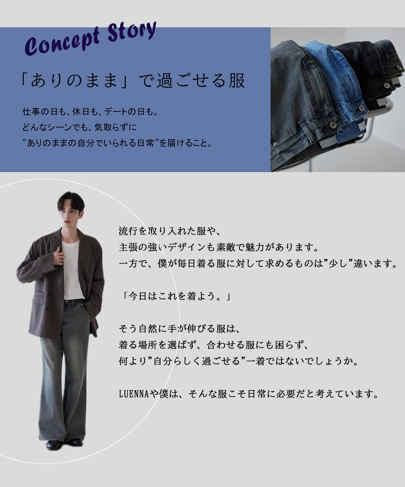
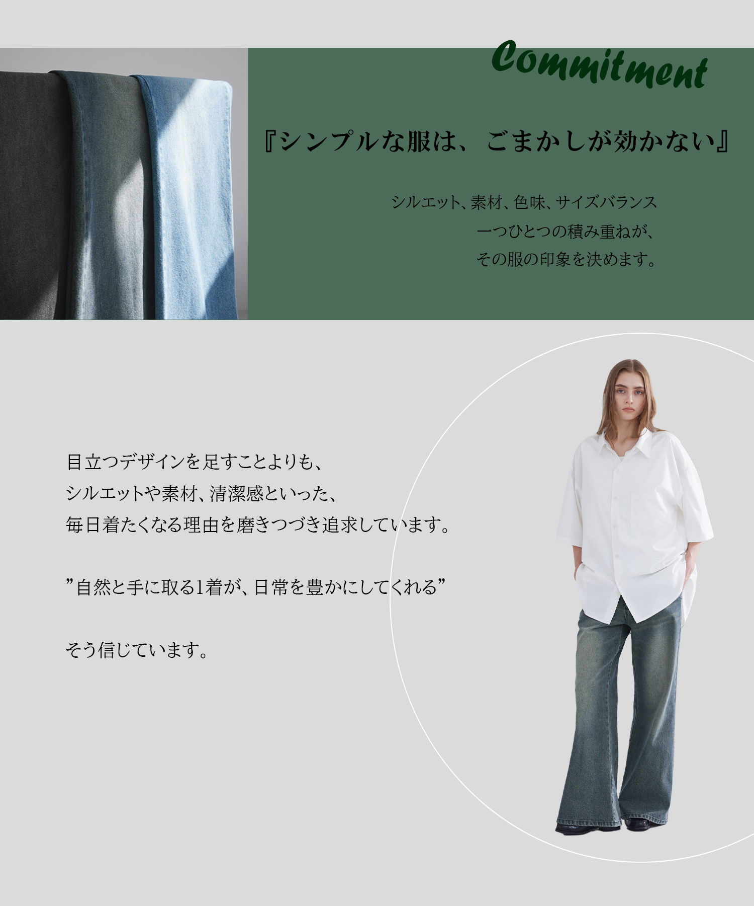
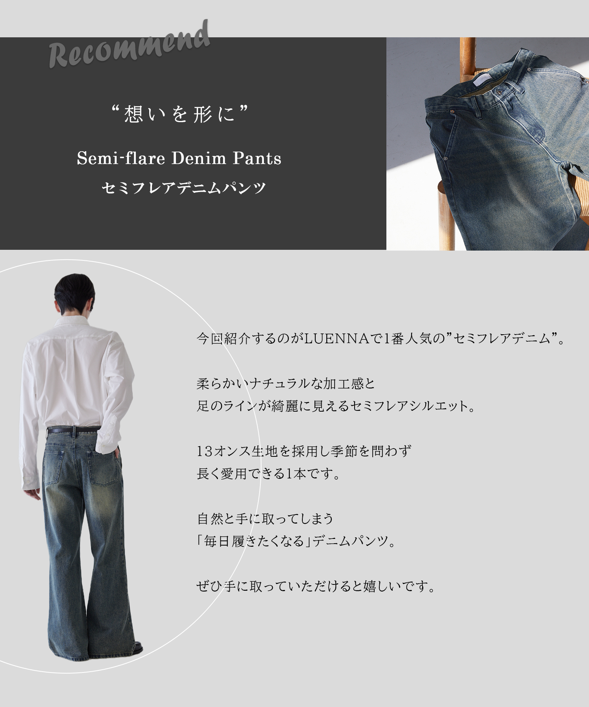
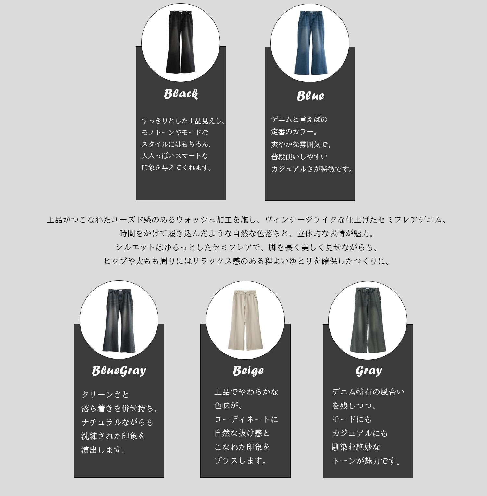

LUENNAがシンプルにこだわるのはなぜか
LUENNA column Vol.3
Welcome to our Vision
みなさん、こんにちは。
早いものでもう8月！
夏もいよいよラストスパートになってきましたね…！
そんな今回は、LUENNAが目指しているビジョンやLUENNAのアイテムの持つ意味を
改めてご紹介させてください！
ブランドの背景から知ってもらえることで、
より一層お手持ちのLUENNAのアイテムをご活躍いただけると思います！



